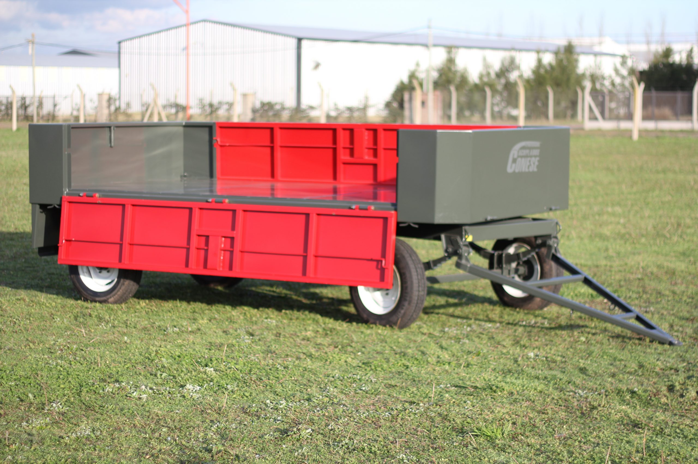

PRETO Agro Maquinaria
Home
Empresa
Categoría
Productos
Marcas
Contacto

Acoplado Conese 4TT
Medidas: 4 mts de largo x 2,00 mts de ancho
Barandas laterales volcables de 0,45 mts
Ejes de 2″ con rodamiento 30206-30208
Aro giratorio a bolitas 660 x 50
Piso de chapa antideslizante
Enganche trasero reforzado
Llantas simples 15 ó 16
Banderillero Verion Vekguide
Pantalla: 7″.
Sistema de guiado: GPS (10 Hz).
Accesorios: Antena GPS. Soporte. Fuente de alimentación.
Instalación: Autoinstalable.
Desmalezadora Bellmaq A150
Ancho de corte: 1,50 metros.
Formato: 3 puntos.
Chasis: Chapa de acero plagada. Bastidor extra-reforzado.
Sistema de corte: Hélice central, con cuchillas oscilantes de acero de alta resistencia.
Regulación de altura: hidráuliuca (3 puntos).
Desmalezadora Bellmaq AR200
Ancho de corte: 2 metros.
Formato: Arrastre.
Chasis: Chapa de acero plagada. Bastidor extra-reforzado.
Sistema de corte: Hélice central, con cuchillas oscilantes de acero de alta resistencia.
Regulación de altura: hidráuliuca (3 puntos).
Acoplado Tanque 3500 Lts.
Polietileno de Alta Densidad - Rotomoldeo, una sola pieza
Tapa pasa-hombre de 45 cm de diámetro
Salida de descarga 2”.
Construido en chapa plegada, espesor 4 mm.
Protegido con antióxido y pintura Poliuretánica.
Planchada delantera y trasera porta bidones, con barandas.
Banderillero Hexagon Ti7
Funcionamiento: Orientación por barra de luces
Pantalla: Táctil (7”). Touch screen.
Gabinete: Aluminio.
Usos: guiado manual. Guiado automático. Control de pulverización. Control de fertilización. Monitor de plantación. Control de plantación. Control de subsuelo.
Banderillero Trimble CFX 350
Sistema operativo: Android.
Resolución: 1024 x 600.
Compatibilidad: Con NAV-500 y NAV-900.
Conectividad: ISOBUS.
Control: Hasta 2 canales y 24 tramos.
Procesador del sistema: Con 4 núcleos iMx6 PLUS 1 GHz.
Almacenamiento: 16 GB/1 GB (eMMC/RAM).
Banderillero Arag Navigator LT
Pantalla: 7″.
Aviso sonoro.
Visualización de numero de lineas, distancia y dirección.
Modalidad diurna/nocturna.
Visualización total del trabajo realizado.
Memorización y visualización de puntos de interés.
Visualización en 2D o 3D, varios niveles de zoom.
Tanque horizontal 8000 lts
Cisterna: De plástico rotomoldeado, con polietileno virgen de alta densidad, construido en una sola pieza.
Capacidad: 8.000 litros.
Formato: Ovalado.
Accesorios: Base de apoyo. Tapa superior (450 mm). Salida de descarga (2″). Doble rompeolas interno. Anclajes superiores. Protección UV para uso a la intemperie.